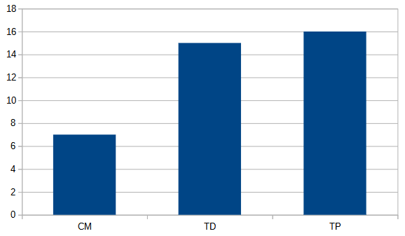

Le BUT informatique, comme tous les autres BUT, dure trois ans et il a pour but de former des informaticiens et informaticiennes
qui peuvent créer et appliqué des solutions informatiques aux besoins de diverses entreprises.
Le technicien supérieur en informatique exerce son activité au sein des entreprises de services du numérique (ESN).
Il possède des Compétences dans l'édition de logiciels, la gestion et directions des systèmes informatiques. A l'obtention de son diplome,
le nouvellement nommé informaticien peut exercer en tant qu'autonome, en faisant parti d'un projet ou avec une poursuite d'étude (master, école d'ingénieur).
La formation a pour objectif la transmission de savoir en développement informatique et en web par l'acquisition des langages de programmation les plus pertinents.
Cette formation porte également un intérêt particulier en ce qui concerne la communication écrite et orale.

La répartition des cours
Comme dans tous les IUT de l'académie Aix-Marseille, les cours du BUT informatique sont organisés en trois types.
Les CM, les TD et les TP. En ce qui concerne le BUT informatique et selon les ressources la répartition des cours peut changer mais les cours sont majoritairement des TP, puis des TD
et peu de CM (voir aucun). Le graphique illustre la répartition des heures de cours pour la ressource R1.01, un sujet dont on parlera plus tard.
Toutes les matières n'ont pas les même répartition entre ces trois catégories. Par exemple, une matière théorique aura moins de TP
tandis qu'une matière pratique en aura plus.
Chaque année est divisée en deux semestres et les cours et sae sont différent pour chaque semestre.
1er année
Durant le premeir semestre, les étudiants ont 12 ressources, c'est à dire 12 matières, respetivement nommé de R1.01 à R1.12.
Chacune de ces ressources possède un certain montant d' heures. L'étudiants devra également travailler sur les SAE du premier semestre qui sont aux nombres de 6 notées de S1.01 à S1.06.